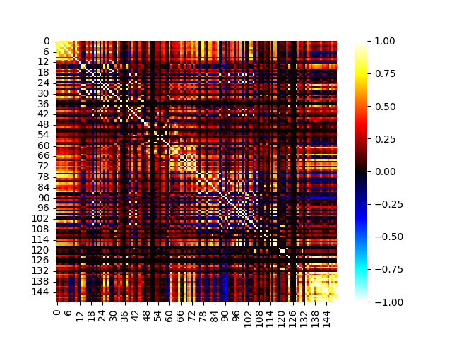

<!DOCTYPE html>
<html class="writer-html5" lang="en" >
<head>
  <meta charset="utf-8">
  
  <meta name="viewport" content="width=device-width, initial-scale=1.0">
  
  <title>Nifti surface FC matrix analyses &mdash; KFTools 0.0.0 documentation</title>
  

  
  <link rel="stylesheet" href="../_static/css/theme.css" type="text/css" />
  <link rel="stylesheet" href="../_static/pygments.css" type="text/css" />
  <link rel="stylesheet" href="../_static/sphinx_tabs/semantic-ui-2.4.1/segment.min.css" type="text/css" />
  <link rel="stylesheet" href="../_static/sphinx_tabs/semantic-ui-2.4.1/menu.min.css" type="text/css" />
  <link rel="stylesheet" href="../_static/sphinx_tabs/semantic-ui-2.4.1/tab.min.css" type="text/css" />
  <link rel="stylesheet" href="../_static/sphinx_tabs/tabs.css" type="text/css" />
  <link rel="stylesheet" href="../_static/copybutton.css" type="text/css" />
  <link rel="stylesheet" href="../_static/theme_override.css" type="text/css" />
  <link rel="stylesheet" href="../_static/gallery.css" type="text/css" />
  <link rel="stylesheet" href="../_static/gallery-binder.css" type="text/css" />
  <link rel="stylesheet" href="../_static/gallery-dataframe.css" type="text/css" />

  
  
  
  

  
  <!--[if lt IE 9]>
    <script src="../_static/js/html5shiv.min.js"></script>
  <![endif]-->
  
    
      <script type="text/javascript" id="documentation_options" data-url_root="../" src="../_static/documentation_options.js"></script>
        <script src="../_static/jquery.js"></script>
        <script src="../_static/underscore.js"></script>
        <script src="../_static/doctools.js"></script>
        <script src="../_static/clipboard.min.js"></script>
        <script src="../_static/copybutton.js"></script>
        <script src="../_static/debug.js"></script>
    
    <script type="text/javascript" src="../_static/js/theme.js"></script>

    
    <link rel="index" title="Index" href="../genindex.html" />
    <link rel="search" title="Search" href="../search.html" />
    <link rel="prev" title="Nifti surface seed-based FC analyses" href="eg010r__nifti_surf_seedfc.html" /> 
</head>

<body class="wy-body-for-nav">

   
  <div class="wy-grid-for-nav">
    
    <nav data-toggle="wy-nav-shift" class="wy-nav-side">
      <div class="wy-side-scroll">
        <div class="wy-side-nav-search"  style="background: white" >
          

          
            <a href="../index.html" class="icon icon-home" alt="Documentation Home"> KFTools
          

          
          </a>

          
            
            
              <div class="version">
                0.0.0
              </div>
            
          

          
<div role="search">
  <form id="rtd-search-form" class="wy-form" action="../search.html" method="get">
    <input type="text" name="q" placeholder="Search docs" />
    <input type="hidden" name="check_keywords" value="yes" />
    <input type="hidden" name="area" value="default" />
  </form>
</div>

          
        </div>

        
        <div class="wy-menu wy-menu-vertical" data-spy="affix" role="navigation" aria-label="main navigation">
          
            
            
              
            
            
              <p class="caption"><span class="caption-text">About KFTools</span></p>
<ul>
<li class="toctree-l1"><a class="reference internal" href="../about_kftools/overview.html">Overview</a></li>
</ul>
<p class="caption"><span class="caption-text">Getting Started</span></p>
<ul>
<li class="toctree-l1"><a class="reference internal" href="../getting_started/installation.html">Installation</a><ul>
<li class="toctree-l2"><a class="reference internal" href="../getting_started/installation.html#using-latest-github-master-source">Using latest github master source</a></li>
</ul>
</li>
<li class="toctree-l1"><a class="reference internal" href="eg001r__fetching_data.html">Downloading KFTools Example Data</a><ul>
<li class="toctree-l2"><a class="reference internal" href="eg001r__fetching_data.html#importage">Importage</a></li>
<li class="toctree-l2"><a class="reference internal" href="eg001r__fetching_data.html#specify-data-download-location">Specify data download location</a></li>
<li class="toctree-l2"><a class="reference internal" href="eg001r__fetching_data.html#list-available-files">List available files</a></li>
<li class="toctree-l2"><a class="reference internal" href="eg001r__fetching_data.html#hb-moments-file">HB Moments file</a></li>
<li class="toctree-l2"><a class="reference internal" href="eg001r__fetching_data.html#nifti-file">Nifti file</a></li>
</ul>
</li>
</ul>
<p class="caption"><span class="caption-text">SNIRF-based fNIRS Analyses</span></p>
<ul>
<li class="toctree-l1"><a class="reference internal" href="eg002r__snirf_events.html">Getting events from .snirf files</a><ul>
<li class="toctree-l2"><a class="reference internal" href="eg002r__snirf_events.html#importage">Importage</a></li>
<li class="toctree-l2"><a class="reference internal" href="eg002r__snirf_events.html#grab-the-data">Grab the data</a></li>
<li class="toctree-l2"><a class="reference internal" href="eg002r__snirf_events.html#get-the-events">Get the events</a></li>
</ul>
</li>
<li class="toctree-l1"><a class="reference internal" href="eg003r__epoching_analysis.html">Epoching-based analysis</a></li>
<li class="toctree-l1"><a class="reference internal" href="eg004r__glm_analysis.html">SNIRF HbM GLM Analysis</a><ul>
<li class="toctree-l2"><a class="reference internal" href="eg004r__glm_analysis.html#importage">Importage</a></li>
<li class="toctree-l2"><a class="reference internal" href="eg004r__glm_analysis.html#grab-the-data">Grab the data</a></li>
<li class="toctree-l2"><a class="reference internal" href="eg004r__glm_analysis.html#specify-and-run-the-glm-model">Specify and run the GLM model</a></li>
<li class="toctree-l2"><a class="reference internal" href="eg004r__glm_analysis.html#look-at-glm-results">Look at GLM results</a></li>
</ul>
</li>
</ul>
<p class="caption"><span class="caption-text">KF Portal NIFTI-based fNIRS Analysis</span></p>
<ul class="current">
<li class="toctree-l1"><a class="reference internal" href="eg005r__nifti_vol_viz.html">Nifti volumes - visualization</a></li>
<li class="toctree-l1"><a class="reference internal" href="eg006r__nifti_vol_glm.html">Nifti volumes - GLM analysis</a><ul>
<li class="toctree-l2"><a class="reference internal" href="eg006r__nifti_vol_glm.html#importage">Importage</a></li>
<li class="toctree-l2"><a class="reference internal" href="eg006r__nifti_vol_glm.html#grab-the-data">Grab the data</a></li>
<li class="toctree-l2"><a class="reference internal" href="eg006r__nifti_vol_glm.html#analysis-and-viz">Analysis and viz</a></li>
</ul>
</li>
<li class="toctree-l1"><a class="reference internal" href="eg007r__nifti_vol_fc.html">Nifti volumes - functional connectivity analyses</a><ul>
<li class="toctree-l2"><a class="reference internal" href="eg007r__nifti_vol_fc.html#importage">Importage</a></li>
<li class="toctree-l2"><a class="reference internal" href="eg007r__nifti_vol_fc.html#grab-the-data">Grab the data</a></li>
<li class="toctree-l2"><a class="reference internal" href="eg007r__nifti_vol_fc.html#analysis-and-viz">Analysis and viz</a></li>
</ul>
</li>
<li class="toctree-l1"><a class="reference internal" href="eg008r__nifti_surf_viz.html">Nifti-derived surfaces - visualization</a></li>
<li class="toctree-l1"><a class="reference internal" href="eg009r__nifti_surf_glm.html">Nifti-derived surfaces - GLM analysis</a></li>
<li class="toctree-l1"><a class="reference internal" href="eg010r__nifti_surf_seedfc.html">Nifti surface seed-based FC analyses</a><ul>
<li class="toctree-l2"><a class="reference internal" href="eg010r__nifti_surf_seedfc.html#importage">Importage</a></li>
<li class="toctree-l2"><a class="reference internal" href="eg010r__nifti_surf_seedfc.html#grab-the-data">Grab the data</a></li>
<li class="toctree-l2"><a class="reference internal" href="eg010r__nifti_surf_seedfc.html#analysis-and-viz">Analysis and viz</a></li>
</ul>
</li>
<li class="toctree-l1 current"><a class="current reference internal" href="#">Nifti surface FC matrix analyses</a><ul>
<li class="toctree-l2"><a class="reference internal" href="#importage">Importage</a></li>
<li class="toctree-l2"><a class="reference internal" href="#grab-the-data">Grab the data</a></li>
<li class="toctree-l2"><a class="reference internal" href="#analysis-and-viz">Analysis and viz</a></li>
</ul>
</li>
</ul>

            
          
        </div>
        
      </div>
    </nav>

    <section data-toggle="wy-nav-shift" class="wy-nav-content-wrap">

      
      <nav class="wy-nav-top" aria-label="top navigation">
        
          <i data-toggle="wy-nav-top" class="fa fa-bars"></i>
          <a href="../index.html">KFTools</a>
        
      </nav>


      <div class="wy-nav-content">
        
        <div class="rst-content">
        
          


<div role="navigation" aria-label="breadcrumbs navigation">

  <ul class="wy-breadcrumbs">
    
      <li><a href="../index.html" class="icon icon-home"></a> &raquo;</li>
        
      <li>Nifti surface FC matrix analyses</li>
    
    
      <li class="wy-breadcrumbs-aside">
        
            
        
      </li>
    
  </ul>

  
  <hr/>
</div>
          <div role="main" class="document" itemscope="itemscope" itemtype="http://schema.org/Article">
           <div itemprop="articleBody">
            
  <div class="sphx-glr-download-link-note admonition note">
<p class="admonition-title">Note</p>
<p>Click <a class="reference internal" href="#sphx-glr-download-auto-examples-eg011r-nifti-surf-fcmat-py"><span class="std std-ref">here</span></a>     to download the full example code</p>
</div>
<div class="sphx-glr-example-title section" id="nifti-surface-fc-matrix-analyses">
<span id="sphx-glr-auto-examples-eg011r-nifti-surf-fcmat-py"></span><h1>Nifti surface FC matrix analyses<a class="headerlink" href="#nifti-surface-fc-matrix-analyses" title="Permalink to this headline">¶</a></h1>
<div class="highlight-default notranslate"><div class="highlight"><pre><span></span>
</pre></div>
</div>
<div class="section" id="importage">
<h2>Importage<a class="headerlink" href="#importage" title="Permalink to this headline">¶</a></h2>
<div class="highlight-default notranslate"><div class="highlight"><pre><span></span><span class="c1"># KF Tools and related imports</span>
<span class="kn">from</span> <span class="nn">kftools.data</span> <span class="kn">import</span> <span class="n">fetch_file</span>
<span class="kn">from</span> <span class="nn">kftools.nifti</span> <span class="kn">import</span> <span class="n">run_surf_parcbasedfc_ana</span>

<span class="kn">import</span> <span class="nn">nibabel</span> <span class="k">as</span> <span class="nn">nib</span>
<span class="kn">from</span> <span class="nn">matplotlib</span> <span class="kn">import</span> <span class="n">pyplot</span> <span class="k">as</span> <span class="n">plt</span>
<span class="kn">import</span> <span class="nn">seaborn</span> <span class="k">as</span> <span class="nn">sns</span>
</pre></div>
</div>
<p class="sphx-glr-script-out">Out:</p>
<div class="sphx-glr-script-out highlight-none notranslate"><div class="highlight"><pre><span></span>/opt/hostedtoolcache/Python/3.8.12/x64/lib/python3.8/site-packages/seaborn/cm.py:1582: UserWarning: Trying to register the cmap &#39;rocket&#39; which already exists.
  mpl_cm.register_cmap(_name, _cmap)
/opt/hostedtoolcache/Python/3.8.12/x64/lib/python3.8/site-packages/seaborn/cm.py:1583: UserWarning: Trying to register the cmap &#39;rocket_r&#39; which already exists.
  mpl_cm.register_cmap(_name + &quot;_r&quot;, _cmap_r)
/opt/hostedtoolcache/Python/3.8.12/x64/lib/python3.8/site-packages/seaborn/cm.py:1582: UserWarning: Trying to register the cmap &#39;mako&#39; which already exists.
  mpl_cm.register_cmap(_name, _cmap)
/opt/hostedtoolcache/Python/3.8.12/x64/lib/python3.8/site-packages/seaborn/cm.py:1583: UserWarning: Trying to register the cmap &#39;mako_r&#39; which already exists.
  mpl_cm.register_cmap(_name + &quot;_r&quot;, _cmap_r)
/opt/hostedtoolcache/Python/3.8.12/x64/lib/python3.8/site-packages/seaborn/cm.py:1582: UserWarning: Trying to register the cmap &#39;icefire&#39; which already exists.
  mpl_cm.register_cmap(_name, _cmap)
/opt/hostedtoolcache/Python/3.8.12/x64/lib/python3.8/site-packages/seaborn/cm.py:1583: UserWarning: Trying to register the cmap &#39;icefire_r&#39; which already exists.
  mpl_cm.register_cmap(_name + &quot;_r&quot;, _cmap_r)
/opt/hostedtoolcache/Python/3.8.12/x64/lib/python3.8/site-packages/seaborn/cm.py:1582: UserWarning: Trying to register the cmap &#39;vlag&#39; which already exists.
  mpl_cm.register_cmap(_name, _cmap)
/opt/hostedtoolcache/Python/3.8.12/x64/lib/python3.8/site-packages/seaborn/cm.py:1583: UserWarning: Trying to register the cmap &#39;vlag_r&#39; which already exists.
  mpl_cm.register_cmap(_name + &quot;_r&quot;, _cmap_r)
/opt/hostedtoolcache/Python/3.8.12/x64/lib/python3.8/site-packages/seaborn/cm.py:1582: UserWarning: Trying to register the cmap &#39;flare&#39; which already exists.
  mpl_cm.register_cmap(_name, _cmap)
/opt/hostedtoolcache/Python/3.8.12/x64/lib/python3.8/site-packages/seaborn/cm.py:1583: UserWarning: Trying to register the cmap &#39;flare_r&#39; which already exists.
  mpl_cm.register_cmap(_name + &quot;_r&quot;, _cmap_r)
/opt/hostedtoolcache/Python/3.8.12/x64/lib/python3.8/site-packages/seaborn/cm.py:1582: UserWarning: Trying to register the cmap &#39;crest&#39; which already exists.
  mpl_cm.register_cmap(_name, _cmap)
/opt/hostedtoolcache/Python/3.8.12/x64/lib/python3.8/site-packages/seaborn/cm.py:1583: UserWarning: Trying to register the cmap &#39;crest_r&#39; which already exists.
  mpl_cm.register_cmap(_name + &quot;_r&quot;, _cmap_r)
</pre></div>
</div>
</div>
<div class="section" id="grab-the-data">
<h2>Grab the data<a class="headerlink" href="#grab-the-data" title="Permalink to this headline">¶</a></h2>
<div class="highlight-default notranslate"><div class="highlight"><pre><span></span><span class="n">data_dir</span><span class="o">=</span><span class="s1">&#39;.&#39;</span>

<span class="n">fetch_file</span><span class="p">(</span><span class="n">data_dir</span><span class="o">=</span><span class="n">data_dir</span><span class="p">,</span> <span class="n">filetype</span><span class="o">=</span><span class="s1">&#39;kp-nii-hbo&#39;</span><span class="p">,</span>
            <span class="n">site</span><span class="o">=</span><span class="s1">&#39;snic&#39;</span><span class="p">,</span> <span class="n">task</span><span class="o">=</span><span class="s1">&#39;rec&#39;</span><span class="p">,</span> <span class="n">subid</span><span class="o">=</span><span class="s1">&#39;sub008&#39;</span><span class="p">,</span> <span class="n">sesid</span><span class="o">=</span><span class="s1">&#39;ses02&#39;</span><span class="p">)</span>
<span class="n">nii_hbo_f</span> <span class="o">=</span> <span class="s1">&#39;snic_sub008_rec_ses02_0920-1711_kp-nii-hbo.nii.gz&#39;</span>
</pre></div>
</div>
</div>
<div class="section" id="analysis-and-viz">
<h2>Analysis and viz<a class="headerlink" href="#analysis-and-viz" title="Permalink to this headline">¶</a></h2>
<p>Run analyses</p>
<div class="highlight-default notranslate"><div class="highlight"><pre><span></span><span class="n">img</span> <span class="o">=</span> <span class="n">nib</span><span class="o">.</span><span class="n">load</span><span class="p">(</span><span class="n">nii_hbo_f</span><span class="p">)</span>
<span class="n">res</span> <span class="o">=</span> <span class="n">run_surf_parcbasedfc_ana</span><span class="p">(</span><span class="n">vol_dat_img</span><span class="o">=</span><span class="n">img</span><span class="p">)</span>

<span class="n">surf_dat_lhrh_r</span><span class="p">,</span><span class="n">surf_dat_lhrh_roi_fc</span><span class="p">,</span><span class="n">surf_dat_lhrh_roi_fc_reorderv2</span><span class="p">,</span><span class="n">coms_order_lhrhv2</span><span class="p">,</span><span class="n">unroi_lhrh</span> <span class="o">=</span> <span class="n">res</span>
</pre></div>
</div>
<p class="sphx-glr-script-out">Out:</p>
<div class="sphx-glr-script-out highlight-none notranslate"><div class="highlight"><pre><span></span>/opt/hostedtoolcache/Python/3.8.12/x64/lib/python3.8/site-packages/nilearn/surface/surface.py:670: VisibleDeprecationWarning: Creating an ndarray from ragged nested sequences (which is a list-or-tuple of lists-or-tuples-or ndarrays with different lengths or shapes) is deprecated. If you meant to do this, you must specify &#39;dtype=object&#39; when creating the ndarray.
  return np.asarray([arr.data for arr in gifti_img.darrays]).T.squeeze()
/opt/hostedtoolcache/Python/3.8.12/x64/lib/python3.8/site-packages/numpy/lib/function_base.py:2691: RuntimeWarning: invalid value encountered in true_divide
  c /= stddev[:, None]
/opt/hostedtoolcache/Python/3.8.12/x64/lib/python3.8/site-packages/numpy/lib/function_base.py:2692: RuntimeWarning: invalid value encountered in true_divide
  c /= stddev[None, :]


</pre></div>
</div>
<p>Brain plots</p>
<div class="highlight-default notranslate"><div class="highlight"><pre><span></span><span class="n">fig</span><span class="p">,</span> <span class="n">ax</span> <span class="o">=</span> <span class="n">plt</span><span class="o">.</span><span class="n">subplots</span><span class="p">()</span>
<span class="n">sns</span><span class="o">.</span><span class="n">heatmap</span><span class="p">(</span><span class="n">surf_dat_lhrh_roi_fc_reorderv2</span><span class="p">,</span><span class="n">cmap</span><span class="o">=</span><span class="s1">&#39;cold_hot&#39;</span><span class="p">,</span><span class="n">vmin</span><span class="o">=-</span><span class="mi">1</span><span class="p">,</span><span class="n">vmax</span><span class="o">=</span><span class="mi">1</span><span class="p">,</span><span class="n">axes</span><span class="o">=</span><span class="n">ax</span><span class="p">)</span><span class="c1">#, cmap=&#39;hot&#39;);</span>
</pre></div>
</div>

<p class="sphx-glr-script-out">Out:</p>
<div class="sphx-glr-script-out highlight-none notranslate"><div class="highlight"><pre><span></span>&lt;AxesSubplot:&gt;
</pre></div>
</div>
<p class="sphx-glr-timing"><strong>Total running time of the script:</strong> ( 0 minutes  14.878 seconds)</p>
<div class="sphx-glr-footer class sphx-glr-footer-example docutils container" id="sphx-glr-download-auto-examples-eg011r-nifti-surf-fcmat-py">
<div class="sphx-glr-download sphx-glr-download-python docutils container">
<p><a class="reference download internal" download="" href="../_downloads/fb932794fdb8036dc6c3af4fbcd9a94d/eg011r__nifti_surf_fcmat.py"><code class="xref download docutils literal notranslate"><span class="pre">Download</span> <span class="pre">Python</span> <span class="pre">source</span> <span class="pre">code:</span> <span class="pre">eg011r__nifti_surf_fcmat.py</span></code></a></p>
</div>
<div class="sphx-glr-download sphx-glr-download-jupyter docutils container">
<p><a class="reference download internal" download="" href="../_downloads/dc1f73d95b6c76fcc123d3138393fcc2/eg011r__nifti_surf_fcmat.ipynb"><code class="xref download docutils literal notranslate"><span class="pre">Download</span> <span class="pre">Jupyter</span> <span class="pre">notebook:</span> <span class="pre">eg011r__nifti_surf_fcmat.ipynb</span></code></a></p>
</div>
</div>
<p class="sphx-glr-signature"><a class="reference external" href="https://sphinx-gallery.github.io">Gallery generated by Sphinx-Gallery</a></p>
</div>
</div>


           </div>
           
          </div>
          <footer>
  
    <div class="rst-footer-buttons" role="navigation" aria-label="footer navigation">
      
      
        <a href="eg010r__nifti_surf_seedfc.html" class="btn btn-neutral float-left" title="Nifti surface seed-based FC analyses" accesskey="p" rel="prev"><span class="fa fa-arrow-circle-left"></span> Previous</a>
      
    </div>
  

  <hr/>

  <div role="contentinfo">
    <p>
        
        &copy; Copyright KCNI Griffiths Lab &amp; Contributors

    </p>
  </div>
    
    
    
    Built with <a href="http://sphinx-doc.org/">Sphinx</a> using a
    
    <a href="https://github.com/rtfd/sphinx_rtd_theme">theme</a>
    
    provided by <a href="https://readthedocs.org">Read the Docs</a>. 

</footer>

        </div>
      </div>

    </section>

  </div>
  

  <script type="text/javascript">
      jQuery(function () {
          SphinxRtdTheme.Navigation.enable(true);
      });
  </script>

  
  
    
    <!-- Theme Analytics -->
    <script>
    (function(i,s,o,g,r,a,m){i['GoogleAnalyticsObject']=r;i[r]=i[r]||function(){
      (i[r].q=i[r].q||[]).push(arguments)},i[r].l=1*new Date();a=s.createElement(o),
      m=s.getElementsByTagName(o)[0];a.async=1;a.src=g;m.parentNode.insertBefore(a,m)
    })(window,document,'script','https://www.google-analytics.com/analytics.js','ga');

    ga('create', 'UA-XXXXXXX-1', 'auto');
    ga('send', 'pageview');
    </script>

    
   

</body>
</html>